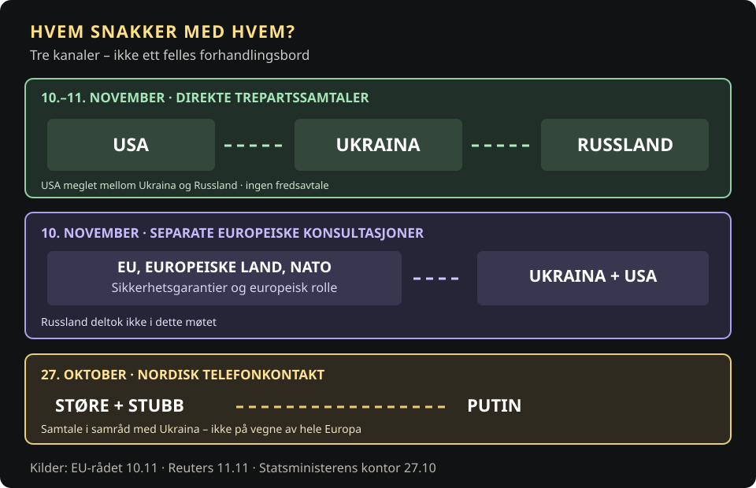

To dager med amerikanskledede samtaler mellom Russland og Ukraina er avsluttet i Abu Dhabi. Russlands forhandlingsleder Vladimir Medinskij sier at partene har funnet felles forståelse på enkelte punkter, men ikke på andre. Han opplyser også at de er enige om en omfattende fangeutveksling, uten at antall eller tidspunkt er offentliggjort. Noen fredsavtale er ikke lagt frem, og nye forhandlinger er varslet. [10][2]
Et sentralt spørsmål er hvem som deltar når Europas sikkerhet diskuteres. Utsendinger fra EU og flere europeiske land har møtt Ukraina og USA i Abu Dhabi. Men de sitter ikke i selve trepartssamtalene med Russland. Medinskij avviste onsdag utsiktene til europeisk deltakelse på kort sikt og hevdet at han ikke hadde mottatt konkrete europeiske fredsforslag. Det er Russlands begrunnelse, ikke en uavhengig fastslått sannhet om Europas diplomati. [6][10]
EU er en av Ukrainas viktigste støttespillere og har bidratt med økonomisk støtte, sanksjoner og sikkerhetspolitisk koordinering. Likevel går den direkte dialogen med Moskva foreløpig gjennom Washington. Det er denne forskjellen – mellom Europas betydning for Ukraina og Europas plass ved selve forhandlingsbordet – som gjør situasjonen politisk krevende.
Oppdatert 12. november: Etter møtene i Abu Dhabi reiste de amerikanske utsendingene Steve Witkoff og Jared Kushner til Moskva for å møte Putin. Samtalene 10.–11. november resulterte i en prinsipiell enighet om fangeutveksling, men ingen fredsavtale eller kunngjort endelig utvekslingsdato. EU og NATO var ikke med i den direkte trepartsdialogen. Associated Press, 12. november.
Samtidig har en nordisk samtalekanal nylig vært i bruk. Den 27. oktober ringte statsminister Jonas Gahr Støre og Finlands president Alexander Stubb til Vladimir Putin fra Helsingfors. Samtalen fant sted i samråd med Ukraina, som ledd i forberedelsene til Abu Dhabi. De understreket at de opptrådte på vegne av Norge og Finland, ikke Europa som helhet. [3]
Tre diplomatiske kanaler


Naboskapet som ikke kan avvikles
Norge og Russland har et forhold som strekker seg langt forbi dagens konflikt. I 2026 er det 200 år siden grensen mellom landene ble fastsatt. Handelen langs kysten i nord er enda eldre. Pomorhandelen bandt norske fiskevær og russiske handelssteder sammen, og nærhet skapte kontakt også når de politiske systemene var ulike. [4]
Under andre verdenskrig bidro sovjetiske styrker til frigjøringen av Øst-Finnmark. Etter at Norge ble medlem av NATO i 1949, ble Sovjetunionen en militær motpart. Likevel fortsatte praktiske forbindelser i nord. Et naboskap kan romme både sikkerhetspolitisk avstand og nødvendige avtaler.
Et tydelig eksempel kom i 2010. Etter fire tiår med forhandlinger ble Norge og Russland enige om delelinjen i Barentshavet og Polhavet. Jonas Gahr Støre, den gang norsk utenriksminister, undertegnet avtalen sammen med Russlands Sergej Lavrov. En langvarig uenighet om havområder ble løst uten maktbruk. [9]
Russlands annektering av Krim i 2014 og fullskalainvasjon av Ukraina i 2022 forandret forholdet grunnleggende. Norge har innført sanksjoner og gitt omfattende støtte til Ukraina. Støre har selv beskrevet hvordan den gamle samarbeidslinjen ble brutt, samtidig som geografi gjør at Norge fortsatt må håndtere naboskapet. [4]
Men ikke alle forbindelser er borte. Den 23. oktober ble Norge og Russland enige om fiskerikvotene for 2027 etter fysiske forhandlinger i Istanbul. Den felles forvaltningen av bestandene i Barentshavet har pågått i 50 år. Fiskene vandrer mellom landenes havområder; ressursene må forvaltes selv når forholdet mellom regjeringene er dårlig. [5]
Det er en annen type kontakt enn fredsforhandlinger. Fiskeriavtalen gir ingen grunn til å tro at Moskva vil fire på sine krav til Ukraina. Men erfaringen illustrerer at det går an å holde enkelte diplomatiske og faglige kanaler åpne uten å godta Russlands krigføring.
Fra grenseavtale til fredsdiplomati
Åpne hendelsene for å se hvorfor Norge kan samarbeide med Russland om enkelte saker samtidig som landet støtter Ukraina.
Grensen mellom Norge og Russland fastsettes
Grensekonvensjonen blir undertegnet i St. Petersburg. Naboskapet får en fast landgrense som består også etter store politiske omveltninger.
Delelinjeavtalen undertegnes
Støre og Lavrov undertegner avtalen om maritim avgrensning i Barentshavet og Polhavet. Den trer i kraft 7. juli 2011 etter ratifikasjon.
Russlands fullskalainvasjon av Ukraina
Invasjonen endrer norsk-russisk kontakt grunnleggende. Norge slutter seg til sanksjoner og øker støtten til Ukraina.
Fiskeriavtalen for 2027 inngås
Norge og Russland blir enige om kvoter etter fysiske forhandlinger i Istanbul. Praktisk ressursforvaltning er ikke en fredsavtale.
Støre og Stubb snakker med Putin
Den norsk-finske telefonsamtalen holdes i samråd med Ukraina. De to lederne opptrer på vegne av sine land.
Abu Dhabi etterfølges av samtaler i Moskva
To dager med trepartssamtaler gir prinsipiell enighet om fangeutveksling, men ingen fredsavtale. Amerikanske utsendinger reiser deretter til Moskva.
Kilder: UD om 1826, UD om 2010, fiskeriavtalen, SMK 27. oktober og AP 12. november.
Europa betaler – men hvem bestemmer?
Den europeiske unionen er ikke uten handlekraft. EU-kommisjonen utbetalte 5. november 4,36 milliarder euro til Ukraina, til blant annet offentlige tjenester og forsvarsbehov. Sammen med medlemslandene har unionen vært en hovedkilde til støtte og sanksjonspress. [7]
Men økonomisk tyngde er ikke det samme som en plass ved bordet med Russland. I en felles erklæring fra Abu Dhabi understreket EU, flere europeiske land, Ukraina, USA og NATO at en fredsløsning må respektere Ukrainas suverenitet og gi troverdige sikkerhetsgarantier. Partene ønsker på sikt bredere samtaler som også inkluderer Europa. Foreløpig skjer kontakten med Russland i et annet format. [6]
Å snakke med Putin er ikke det samme som å representere Europa
Støre og Stubb understreket selv at de snakket som ledere for Norge og Finland, ikke på vegne av EU eller andre europeiske regjeringer. En slik samtale kan formidle posisjoner, men er ikke en fullmakt til å binde andre land eller Ukraina til en avtale.
Europas separate konsultasjoner i Abu Dhabi handlet blant annet om ukrainsk suverenitet og sikkerhetsgarantier. Direkte kontakt mellom USA, Ukraina og Russland er et annet format med andre deltakere. Norges pressemelding · EUs erklæring.
Det er viktig å skille mellom å være holdt utenfor og å være passiv. Europas begrensede direkte rolle skyldes ikke bare interne uenigheter, men også Russlands avvisning av europeisk deltakelse. Samtidig gjenstår spørsmålet om EU klarer å omsette sin økonomiske og politiske tyngde til innflytelse når en framtidig sikkerhetsordning for kontinentet skal utformes.
Forhandlingene handler ikke bare om en mulig våpenhvile, men om sikkerhetsgarantier og hvordan Europas framtidige sikkerhetsordning skal se ut. Ukraina og de europeiske partnerne har understreket kravene om suverenitet, territorial integritet og troverdige garantier. Russland ønsker å diskutere en bredere europeisk sikkerhetsramme. Avstanden mellom posisjonene er fortsatt stor. [6][10]
Den norsk-finske samtalen med Putin er ingen dokumentert diplomatisk seier. Det er heller ikke gitt at erfaringen fra norsk-russisk fiskeriforvaltning kan overføres til en krig om ukrainsk territorium. Men Norge kjenner betydningen av å kunne kommunisere med en nabo man er dypt uenig med.
Når blir en samtale til en avtale?
Fire ulike nivåer i diplomati. Dette er Paradisavisas pedagogiske modell, ikke en beskrivelse av at fredsforhandlingene følger et fast skjema.
Kildestatus per 12. november: Reuters 11. november, AP 12. november.
For Norge er spørsmålet hvordan man skal leve med Russland som nabo. For Europa er spørsmålet hvem som får påvirke sikkerhetsordningen når stormaktene forhandler. Å holde en samtalelinje åpen er ikke å gi etter – men det er heller ingen garanti for innflytelse.
Hva er viktigst for en varig fredsavtale?
Dette er et frivillig leserspørsmål, ikke en representativ undersøkelse. Bare ditt eget svar lagres lokalt. Ingen fellestall eller prosenter vises.
Avstemningen trenger JavaScript og sender ikke data til en server.
Du valgte:
Dette viser bare ditt eget svar.
Kilder
- Reuters, 11. november: Ny forhandlingsdag i Abu Dhabi
- AP, 11. november: De amerikanskledede samtalene
- Statsministerens kontor, 27. oktober: Støre og Stubb snakket med Putin
- Statsministerens kontor, 13. mai: Russland har endret seg. Det har også vårt naboskap.
- Nærings- og fiskeridepartementet, 23. oktober: Fiskeriavtalen for 2027
- Det europeiske råd, 10. november: Felles erklæring om Abu Dhabi-møtene
- EU-kommisjonen, 5. november: Støtteutbetaling på 4,36 milliarder euro
- Anadolu, 10. november: Lavrovs uttalelse om de europeiske utsendingene
- Utenriksdepartementet: Delelinjeavtalen med Russland i 2010
- Reuters, 11. november: Russland om resultatet av Abu Dhabi-samtalene og EUs rolle
- Associated Press, 12. november: Amerikanske utsendinger reiser til Moskva etter Abu Dhabi-samtalene